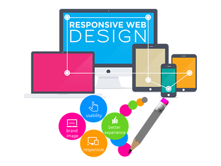

Diseño Web
El diseño web es una actividad que consiste en la planificación, diseño e implementación de sitios web. Un diseñado r web tiene que ver con cómo crear y desarrollar un pagina web así también como los clientes interactúan con ella.
El diseño web es una actividad que consiste en la planificación, diseño e implementación de sitios web. Un diseñado r web tiene que ver con cómo crear y desarrollar un pagina web así también como los clientes interactúan con ella.
La programación informática o programación algorítmica, acortada como programación, es el proceso de diseñar, codificar, depurar y mantener el código fuente de programas de computadora. El código fuente es escrito en un lenguaje de programación.

Una red informática es un conjunto de dispositivos interconectados entre sí a través de un medio, que intercambian información y comparten recursos. Básicamente, la comunicación dentro de una red informática es un proceso en el que existen dos roles bien definidos para los dispositivos conectados, emisor y receptor, que se van asumiendo y alternando en distintos instantes de tiempo. También hay mensajes, que es lo que estos roles intercambian. La estructura y el modo de funcionamiento de las redes informáticas actuales están definidos en varios estándares, siendo el más extendido de todos el modelo TCP/IP, basado en el modelo de referencia o teórico OSI.
Aqui te facilitaremos los conocimientos mas basicos, y abansados en informatica comiensa tu trayecto al aprendisaje de esta bella materia para nosotros la madre de las ciencias.